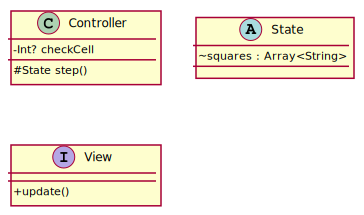
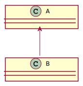
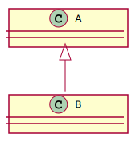
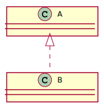
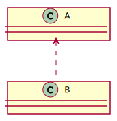
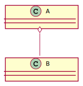
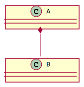

<!doctype html>
<html>
	<head>
		<meta charset="utf-8">
		<meta name="viewport" content="width=device-width, initial-scale=1.0, maximum-scale=1.0, user-scalable=no">

		<title>Интерфейсы и абстрактные классы</title>

		<link rel="stylesheet" href="../dist/reset.css">
		<link rel="stylesheet" href="../dist/reveal.css">
		<link rel="stylesheet" href="../dist/theme/beige.css" id="theme">

		<!-- Theme used for syntax highlighted code -->
		<link rel="stylesheet" href="../plugin/highlight/github.css" id="highlight-theme">
		<style>
			.container{
				display: flex;
			}
			.col{
				flex: 1;
			}
		</style>
	</head>
	<body>
		<div class="reveal">
			<div class="slides">
                <section data-markdown data-separator="!~~~!" data-separator-vertical="~~~" > 
<script type="text/template">

## Проблемы наследования

~~~

### Проблемы иерархии классов

- сложность множественного наследования
- хранение объектов иерархии
- управление объектами иерархии
- сложные зависимости открытых функций

~~~

### Проблемы множественного наследования

- одинаковые функции в родительских классах
- одинаковые свойства и их инициализация
- объединение конструкторов

~~~

### Отношение реализации

- Один класс (**интерфейс**) описывает свойства и функции.
- Другой класс реализует свойства и функции одно или нескольких интерфейсов.
- Возможны промежуточные варианты между чистыми интерфейсами и наследованием.

~~~

## Интерфейсы в Kotlin

- Позволяют указывать реализацию функций по умолчанию.
- Не позволяют создавать конструктор.
- Инициализация свойств может эмулироваться с помощью геттеров.

~~~

## Абстрактные классы в Kotlin

- Не поддерживают множественное наследование
- Позволяют создать конструктор.

!~~~!

## Синтаксис

~~~

### Абстрактные классы

<pre class="Kotlin"><code>abstract class Controller(
	var state: State
) {
	var isChecked: Int? = null
	fun step() = ...
	abstract fun checkMove()
}
</code></pre>

~~~

### Интерфейсы

<pre class="Kotlin"><code>interface Controller {
	fun step() = { }
	fun checkMove()
    val color: Int
		get() = 3
	val id: Int
}
</code></pre>

~~~

### Реализация

<pre class="Kotlin"><code>class FoxController(
	val state: State
) : Controller {
	override fun checkMove()
	override val id = 1
}
</code></pre>

!~~~!

## Отношение между классами

~~~

### Синтаксис классов



~~~

### Ассоциация
<div class="container">
	<div class="col" data-markdown>
	<pre class="kotlin"><code>class A
class B(val a: A)
	</code></pre>
	</div>
	<div class="col">
		
	</div>
</div>

~~~

### Наследование
<div class="container">
	<div class="col" data-markdown>
	<pre class="kotlin"><code>class A
class B : A
	</code></pre>
	</div>
	<div class="col">
		
	</div>
</div>

~~~

### Реализация

<div class="container">
	<div class="col" data-markdown>
	<pre class="kotlin"><code>interface A
class B : A
	</code></pre>
	</div>
	<div class="col">
		
	</div>
</div>

~~~

### Зависимость

<div class="container">
	<div class="col" data-markdown>
Изменение спецификации одного класса отражается на другом.
	</div>
	<div class="col">
		
	</div>
</div>

~~~

### Ассоциация: агрегация

<div class="container">
	<div class="col" data-markdown>
Объекты одного класса входят в другой. Например: Студент – Группа.
	</div>
	<div class="col">
		
	</div>
</div>

~~~

### Ассоциация: агрегация

<div class="container">
	<div class="col" data-markdown>
Объекты одного класса не существуют без другого. Например: Оценка – Студент.
	</div>
	<div class="col">
		
	</div>
</div>

</script>
                </section>

			</div>
		</div>

		<script src="../dist/reveal.js"></script>
		<script src="../plugin/notes/notes.js"></script>
		<script src="../plugin/markdown/markdown.js"></script>
		<script src="../plugin/highlight/highlight.js"></script>
		<script src="../plugin/audio-slideshow/plugin.js"></script>
		<script src="../plugin/audio-slideshow/recorder.js"></script>
		<script src="../plugin/audio-slideshow/RecordRTC.js"></script>
		<script src="../plugin/menu/menu.js"></script>
		<script>
			Reveal.initialize({
				hash: true,
				width: '90%',
    			height: '100%',
				// Learn about plugins: https://revealjs.com/plugins/
				// plugins: [ RevealMarkdown, RevealHighlight, RevealNotes, RevealAudioSlideshow, RevealAudioRecorder, RevealMenu ],
				// audio: {
				// 	prefix: 'audio/',
				// 	suffix: '.webm;codecs=opus',
				// 	autoplay: false,
				// 	advance: -1,
				// },
				plugins: [ RevealMarkdown, RevealHighlight, RevealNotes, RevealMenu ],
				menu: {
					custom: [{
						title: 'Home',
						icon: '<i class="fa fa-home">',
						src: '../menu.html'
					}]
				}
			});
		</script>
	</body>
</html>
